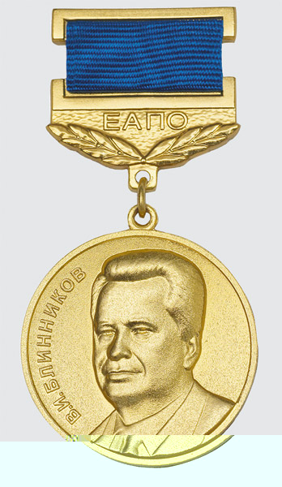

Обладатели наград ЕАПО
| № | ФИО | Степень | Медаль | Представлен от: | Научные работы |
|---|---|---|---|---|---|
| 1 | Оморов Роман Оморович | Д.т.н., профессор, член-корреспондент Национальной академии наук КР, академик Международной инженерной академии, Инженерной академии академии КР, Нью-Йоркской академии наук. Заслуженный деятель науки КР | «За вклад в изобретательское и патентное дело» 2006 год | Государственной службы интеллектуальной собственности и инноваций | Имеет более 390 научных и учебно-методических работ, в том числе 20 монографий, 4 учебника и 11 учебных и методических пособий. |
| 2 | Токоев Абдикалил Токоевич | Магистр международного права по направлению «Международное право». | «За вклад в патентное дело» 2008 год | Государственной службы интеллектуальной собственности и инноваций | Имеет более 30 опубликованных работ по вопросам информационно-коммуникационных технологий и охраны интеллектуальной собственности. |
| 3 | Бектуров Жапарбек Турсуналиевич | Заслуженный врач КР, д.м.н., профессор | «За вклад в изобретательскую деятельность» 2008 год | Национальный хирургический центр им. М.Мамакеева | Автор более 100 научных статей, 3 методические рекомендации, 1 монография |
| 4 | Абдраимов Самудин Абдраимович | Профессор, член корр. НАН КР., Заслуженный изобретатель КР | «За вклад в изобретательскую деятельность» 2008 год | Института машиноведения НАН КР | Автор свыше 285 научных работ, 11 монографий, 87 изобретений, 6 патентов РФ, 7 Евразийских патентов. |
| 5 | Акрамов Эрнст Хашимович | Заслуженный врач КирССР, д.м.н., профессор., Почётный профессор ОшГУ., ОшГСУ., УДН, мастер спорта, спорт.гимнастика. | «За вклад в изобретательскую деятельность» 2009 год | Кыргызской государственной медицинской академии им. И. Ахунбаева | Автор более 350 научных работ, 16 монографий, 23 патентов на изобретения |
| 6 | Омурбаев Алмаз Сагындыкович | Канд.мед.наук, доцент | «За вклад в изобретательскую деятельность» 2010 год | Кыргызской государственной медицинской академии им. И. Ахунбаева | Автор свыше 70 научных статей и 8 изобретений, 5 патентов ЕАПВ, 2 патента Китайского патентного ведомства. |
| 7 | Асанов Болот Усенович | Кандидат химических наук | «За вклад в изобретательскую деятельность» 2011 год | Национального хирургического центра | Автор более 20 научных работ. 2 монографии, 11 изобретений |
| 8 | Усупбаева Акылбек Чолпонкулович | Док.мед.наук, профессор. | «За вклад в изобретательскую деятельность» 2012 год | Кыргызской государственной медицинской академии им. И. Ахунбаева | Автор более 400 научных статей, 6 монографий, имеет 31 методических рекомендаций, 36 патентов на изобретение, 19 удостоверений на рационализаторские предложения. |
| 9 | Мехова Елена Егоровна | «За вклад в патентное дело» 2012 год | Кыргызско-Российского Славянского университета им. Б.Ельцина | ||
| 10 | Хайленко Валентина Васильевна | «За вклад в патентное дело» 2013 год | Государственной службы интеллектуальной собственности и инноваций | ||
| 11 | Шипилов Владимир Николаевич | «Заслуженный изобретатель КР 2007г.» | «За вклад в изобретательскую деятельность» 2013 год | ОсОО «Электрофарфор» | Автор более 40 изобретений, 27 из которых внедрены в производство |
| 12 | Мамасаидов Мухамаджан Ташалиевич | Д.т.н., профессор, академик НАН КР | «За вклад в изобретательскую деятельность» 2014 год | Национальной академии наук КР | Автор более 200 опубликованных научных работ, в том числе 12 монографий и 33 изобретений |
| 13 | Осмоналиев Каныбек Осмоналиевич | Отличник народного образования КР, доктор физ-мат.н., профессор, член-корреспондент Международной кадровой академии | «За вклад в патентное дело» 2014 год | Автор более 100 научных и научно-педагогических статей и трудов | |
| 14 | Исаева Зина Беккелдиевна | «За вклад в патентное дело» 2016 год | Государственной службы интеллектуальной собственности и инноваций | ||
| 15 | Абдраимов Эмиль Самудинович | Д.т.н., профессор | «За вклад в патентное дело» 2016 год | Национальной академии наук КР | Автор свыше 70 печатных работ, в том числе 1 монография, 8 патентов и авторских свидетельств на изобретения |
| 16 | Бапанова Ж.Б. | «Отличник народного образования КирССР» 1990 год | «За вклад в патентное дело» 2017 год | РДИТА «Алтын туйун» | |
| 17 | Даровских Владимир Дмитриевич | К.т.н., профессор | «За вклад в изобретательское и патентное дело» 2018 год | КГТУ им.И.Раззакова | Автор свыше 60 авторских свидетельств, более 2000 научных изданий, 57 патентов в РФ и КР. |
| 18 | Осмонов Ысман Джусупбекович | Д.т.н., профессор | «За вклад в изобретательское дело» 2019 год | ЦИАТ при КНАУ им.К.Скрябина | Автор свыше 200 публикаций, 210 монографий, 36 изобретений |
| 19 | Балтабаев Мир Али Курбаналиевич | Д.м.н., профессор | «За вклад в изобретательское дело» 2020 год | Кыргызско-Российского Славянского университета | Имеет 24 патента, из них 1 патент ЕАПО, 15 патентов Кыргызской Республики, 5 патентов Республики Узбекистан, 2 патента Российской Федерации и 1 патент СССР, а также 5 рационализаторских предложений и 2 авторские свидетельства. Автор более 238 научных работ и методических пособий. |
| 20 | Бочкарев Игорь Викторович | Д.т.н., профессор | «За вклад в патентное дело» 2020 год | Кыргызского государственного технического университета им.И.Раззакова | Имеет 77 изобретений, из них: 19 патентов КР, 4 патента Республики Куба, 6 патентов РФ и 48 авторских свидетельств СССР. Автор 266 научных публикаций. |

Золотая медаль имени В. И. Блинникова «За вклад в изобретательское и патентное дело» является наградой Евразийской патентной организации, посвященной памяти и учрежденной в честь первого Президента Евразийского патентного ведомства Виктора Ивановича Блинникова, видного деятеля Евразийского пространства в области интеллектуальной собственности, основоположника Евразийской патентной организации.